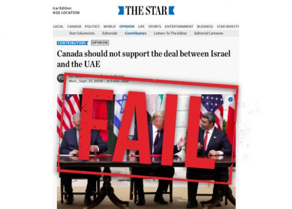

Yasser Dhouib’s September 21 column in the Toronto Star
(Canada should not support the deal between Israel and the UAE)
is a tragic representation of much of the diplomatic thinking in the Middle East over the last several decades – lofty, but unsuccessful ideas. Instead of lauding peace between the Jewish state and an Arab country, leave it to the Toronto Star to publish a commentary lamenting peace!

In his column, Dhouib writes that “there is little to celebrate or support” with the recent peace agreement between Israel and the United Arab Emirates, bemoaning that while the new bilateral treaty establishes full diplomatic and economic relations between the two countries, the Palestinian Authority is excluded.
His position is a popular one in diplomatic circles around the world, but it’s not a position that has been successful in actually securing peace in the region.
Decades of diplomatic thinking posited that the road to peace in the Middle East ran through Jerusalem and Ramallah, and only by establishing peace between Israel and the Palestinians could peace exist elsewhere in the Arab world. But recent weeks alone have shattered that myth. First, Israel and the United Arab Emirates establish a peace deal, followed less than a month later by a separate agreement between Israel and Bahrain.
Despite the efforts involved for years based on these parameters, not only has peace not been achieved between Israel and the Palestinian Authority, but there has also not been any peace agreements or progress elsewhere in the Middle East until recently, either.
The reality, as it turns out, is far less complicated, but far more promising: most governments in the Middle East do not seek war with Israel, and in fact would actively embrace peace with it, if only given the opportunity. Both the United Arab Emirates and Bahrain are small, oil-rich Gulf States threatened by a large and menacing presence from Iran.
Furthermore, neither country has ever had a territorial or other dispute with Israel, and there is no good reason for them to deprive their peoples from full relations and openness with Israel, a growing technological and medical powerhouse, and the only liberal democracy in the Middle East.
So what exactly is the problem, then, in establishing peace between Israel and these two Gulf States? While Dhouib is technically accurate that these two respective peace deals exclude the Palestinian Authority, the reality is that it was not Israel, the United Arab Emirates, Bahrain or even the United States which excluded the Palestinians, but their own leadership: the Palestinian Authority.
The Palestinian Authority, and its predecessor, the Palestine Liberation Organization, has existed since 1964, and since 1993, has officially accepted Israel’s right to exist. But actions speak louder than words. Time and time again, the Palestinian leadership has been offered virtually all their demands – all of the Gaza Strip, virtually all of Judea & Samaria – commonly called the West Bank – and even some Palestinians who were displaced during Israel’s 1948 War of Independence could return. And yet those offers were rejected.
In 2005, Israel even voluntarily vacated the Gaza Strip, uprooting nearly 10,000 citizens from their homes, in a painful unilateral concession for peace. The area later became a staging ground for terror tunnels and rockets being launched into Israel.
A cursory look at Palestinian media and textbooks is another vivid example of how the Palestinian Authority has sabotaged every opportunity for peace with Israel. Instead of preparing its people for peace with Israel by promoting messages of coexistence and tolerance, or at the very least acceptance for the existence of Israel, official Palestinian media is rife with imagery of Israelis and Jews that looks like it was stolen from 1930s Nazi propaganda. Even more tragic, Palestinian schoolchildren are being indoctrinated and having their minds poisoned with much of the same anti-Israel and antisemitic propaganda.
The repeated Palestinian rejection of Israel’s offers and the anti-Israel messages in official Palestinian media aren’t isolated problems; they represent the heart of the problem: the Palestinian Authority has demonstrated a repeated and clear habit of rejecting peace, official or not, with the State of Israel.
Faced with such Palestinian rejectionism, what is Israel to do? Why should Israel refuse to expand its diplomatic and economic relationships with Arab countries throughout the Middle East simply because the Palestinian Authority refuses to negotiate and act in good faith?
The simple answer, and reality, is that it shouldn’t. Israelis, having suffered invasions and terrorism from nearly the moment they achieved independence, understand the cost of war and desperately strive for peace with their Palestinian neighbours. But as long as the Palestinian leadership refuses to do likewise, it will continue to be left in the dust as Israel, the United Arab Emirates and Bahrain – and, according to rumours, yet more Arab states – continue to make peace. It is high time the Palestinian Authority catches the peace train before it gets abandoned by the entire Middle East.